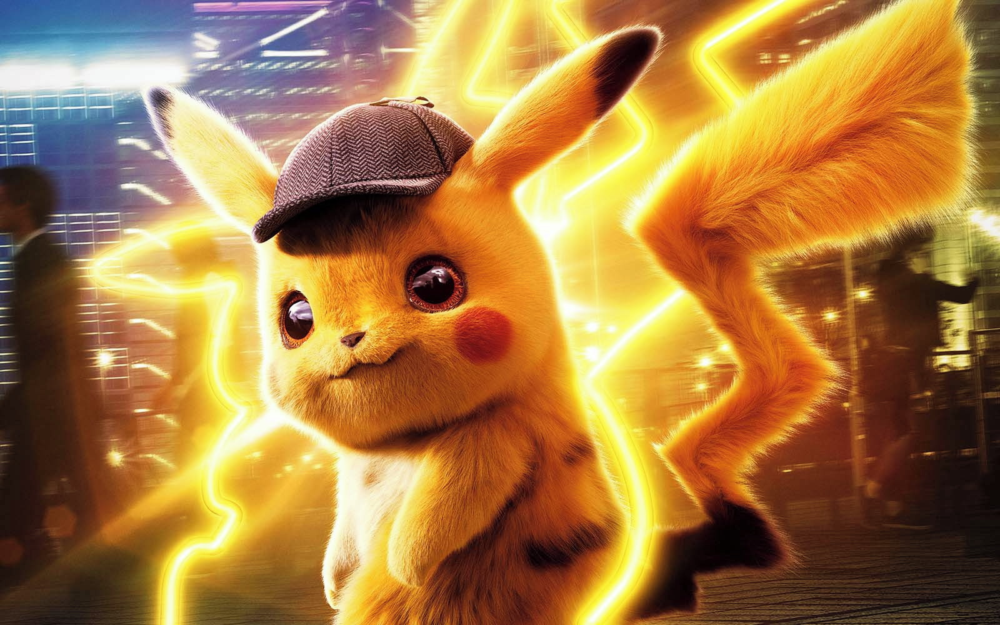
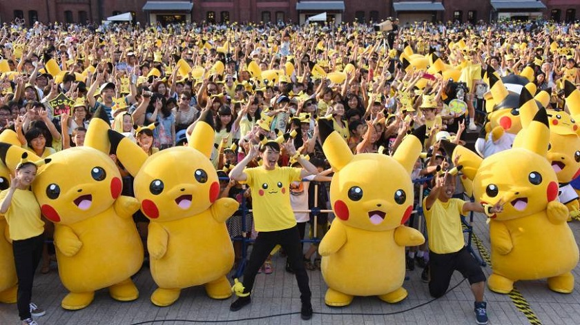

O universo pokémon
O universo Pokémon é o lugar onde todos os Pokémon e humanos vivem. Esse universo, além do mundo Pokémon, abriga também outras dimensões e mundos alternativos. É dito em muitos mitos de Sinnoh que o universo Pokémon foi criado por Arceus. As lendas dizem que Arceus nasceu de um Ovo no meio de puro caos, e depois formou o universo com seus mil braços. Arceus criou Dialga e Palkia e lhes deu as habilidades de controlar o tempo e o espaço respectivamente. Junto com estes dois, Arceus também criou Giratina e lhe concedeu a habilidade de manipular a anti-matéria. Ambos Palkia e Dialga vivem em sua respectivas dimensão; Giratina por sua vez, vive no mundo reverso. Com a criação do Universo, muitos astros, estrelas, planetas e outros corpos celestes foram se formando. O mundo Pokémon foi criado juntamente com estes planetas, e nas fases iniciais de criação do planeta, ou até mesmo antes, Arceus criou Azelf, Uxie e Mesprit para dar força de vontade, conhecimento e emoções aos seres vivos.
O Mundo Pokémon é o principal planeta conhecido, onde os Pokémon e humanos vivem. Este planeta parece e age como o mundo real em termos de geografia. Ambos têm relevo, oceanos e água que suportam a vida, sugerindo que o mundo Pokémon está aproximadamente na mesma distância do nosso ao Sol e também o mesmo tamanho. Os seres humanos e a natureza também estão muito ligados lá, um exemplo disso é que todas as cidades e vilas estão ao redor da natureza. O mundo Pokémon é dividido em regiões como Kanto, Johto, Hoenn, Sinnoh, Unova, Kalos, Alola e Galar, e elas apresentam uma grande diversidade de formas de relevo. Fora estas regiões, existem também arquipélagos de ilhas que não pertencem à nenhuma região. Embora existam grandes semelhanças entre as regiões, existem também grandes diferenças, tais como as lendas e crenças envolvendo os Pokémon e os Pokémon que mudam de região para região.
pikachu e seus poderes
Pikachu é um tipo de Pokémon elétrico: os bolsos em suas bochechas, identificado por discos vermelhos que decoram, são capazes de gerar choques elétricos de intensidade variável, chegando até o nível de poder de um raio. De acordo com site do Sword and Shield, um Gigatamax Pikachu é tão poderosa que agora ele pode produzir eletricidade suficiente para rivalizar com uma usina de energia. Seu movimento de assinatura é o G-Max Volt Crash, que paralisa o oponente e causa dano.
Sem um motivo lá muito lógico ou evidente, o Pikachu de Ash no anime é apaixonado por ketchup. São poucas as ocasiões em que o bichinho aparece degustando a iguaria, mas o amor é real oficial. Quais são os pontos fortes e fracos de pikachu? pikachu é um pokémon de tipo elétrico. Pokémon tipo elétrico são fortes contra pokémon do tipo Água, Voador mas eles são fracos contra pokémon do tipo Elétrico, Grama, Dragão.
As incríveis pokebolas
O nome Pokémon vem da união de duas palavras em inglês: Pocket Monsters, que significa Monstros de Bolso. E para que essas criaturas, às vezes enormes, possam caber nos bolsos de seus treinadores, eles devem estar dentro de Poké Bolas. As Poké Bolas são itens fundamentais na jornada de um treinador, já que é através delas que se consegue capturar um Pokémon. Inicialmente, as Poké Bolas eram feitas das Bolotas de Carvalho (Apricorns), sendo que cada uma tinha uma propriedade especial, dependendo do fruto usado para fazê-la. Atualmente, empresas como a Devon e a Silph.Co desenvolvem cada vez mais Poké Bolas com novas funcionalidades.
Cada treinador pode carregar consigo seis Poké Bolas com Pokémon, por vez, e quando este captura um Pokémon que exceda este limite, a Poké Bola é enviada automaticamente para o Professor que entregou o Pokédex ao treinador, ou para o sistema de depósito global. Quanto ao número de Poké Bolas vazias para futuras capturas, o treinador pode levar consigo quantas ele quiser ou couber na sua bolsa. Para armazenar um Pokémon em seu interior, a Poké Bola o reduz a uma espécie de plasma, e feito isso, o Pokémon não pode ser capturado por outros treinadores - a menos que seja liberado, outra função especial da Poké Bola.
Pokemon no Japão
A franquia Pokémon está entrelaçada a cultura e os hábitos no Japão. A cidade de Kagawa, a 55 km de Tóquio, fechou parceria com a The Pokémon Company para um projeto de revitalização da área urbana. Essa colaboração será chamada de “Paraíso de Slowpoke”. O monstrinho aquático e psíquico de Kanto estampará ônibus, balsas e quartos de hotel da província.
O projeto foi apresentado no último sábado (4). Serão quatro hotéis espalhados pela região. Além da decoração, os hóspedes terão acesso a toalhas personalizadas de Slowpoke. O local passará a vender doces inspirados na cauda de Slowpoke. O Pokémon foi escolhido para representar Kagawa por conta das recorrentes chuvas da província. Os ônibus e balsas de transporte público da província também serão completamente decorados. Estas embarcações fazem rotas que ligam ao porto de Takamatsu e o de Shodoshima. Já os ônibus conectam o Aeroporto de Takamatsu a Takamatsu e Kotohira.